Ingeniería y Reformas ANK · ноябрь 2026
Учёт смен, зарплаты, объектов и счетов — с телефона рабочего до ведомости и портала клиента
Показ на тестовом месяце: пять рабочих на типовом договоре, четыре объекта, октябрь 2026
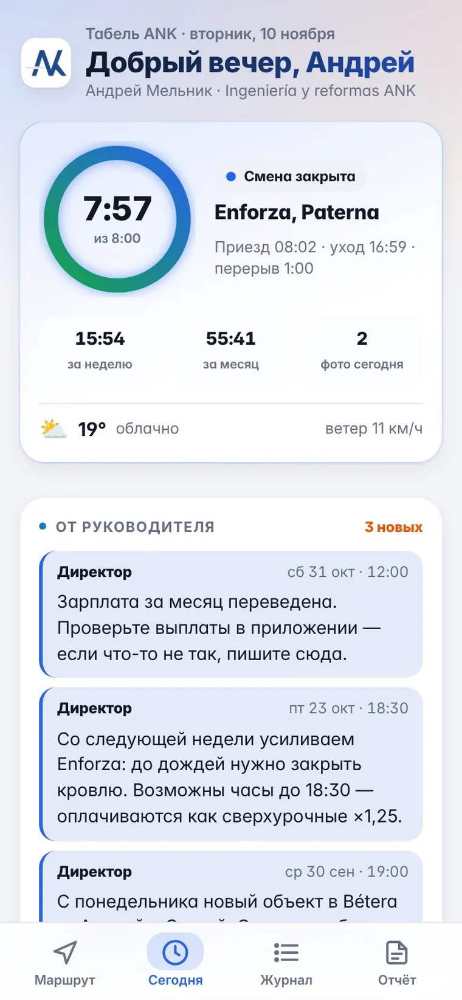
Собираются по сообщениям и по памяти. В конце месяца спорим, кто сколько отработал и сколько переработал.
Бензин, диски, клей: чек теряется, компенсацию считают вручную, бухгалтер узнаёт последним.
Часы по объекту собираем заново. О неоплаченном счёте вспоминаем, когда он уже просрочен.
Клиент не видит, что сделано за неделю. Partes подписываются на бумаге, медосмотры и PRL истекают незаметно.
Телефон рабочего
Офис и телефон
Ссылка для клиента
Бот проверяет базу каждые 15 минут: кто не отметился, опоздания, просроченные счета и документы — и может присылать сводки в Telegram, WhatsApp или на почту.
Утром — «Приехал»: время и место GPS записываются сами. На объекте с геозоной отметка ставится автоматически.
План дня от прораба: объект, задачи, заметка. Сделанное отмечает галочкой.
Одной кнопкой: «Опаздываю», «Нужен материал», расход с фото чека.
Вечером — «Уехал», фото работ и пара слов о сделанном. Журнал и PDF за месяц всегда под рукой.
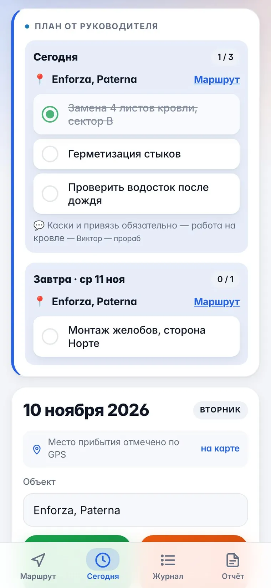
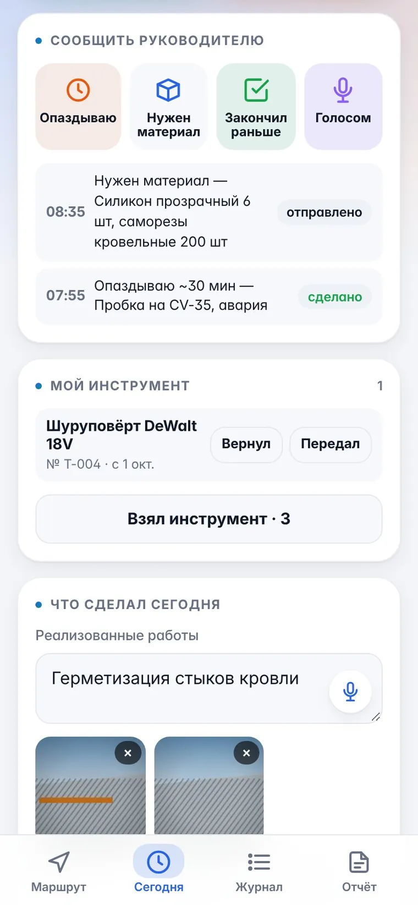
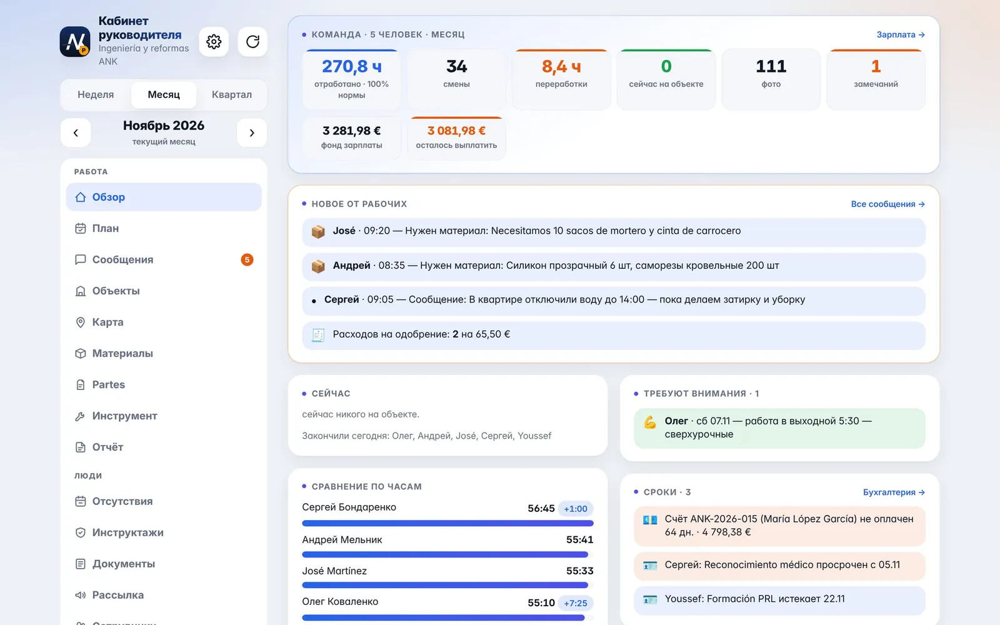
Часы, смены и переработки за неделю или месяц, фонд зарплаты и сколько осталось выплатить.
Заявки на материал и расходы с чеком ждут одобрения.
Опоздания, работа в выходной, просроченные счета и медосмотры — без ручной проверки.
Договор у всех пятерых
Тип
Indefinido ordinario
Категория
Fontanero Oficial 3ª
Время
40 ч в неделю, пн–пт
Оклад
1 900 € брутто × 12
Час
10,96 € (оклад × 12 / 2080 ч)
Сверхурочные
× 1,25 = 13,70 € за час
Отпуск
30 дней, испытательный 15 дней
Объекты месяца
C/ Cartagena 3 — реформа квартиры, частный клиент
Bétera — климатизация шале, сдан 24 октября
Enforza, Paterna — кровля и водостоки склада
Av. del Puerto 112 — помещение под кафе, со 2 ноября
Люди, клиенты, реквизиты и суммы вымышлены; договор типовой.
10 005,60 €
начислено брутто: 5 окладов по 1 900 € и сверхурочные
36,9 ч
сверхурочных у бригады — 505,60 € по 13,70 € за час
230,55 €
расходы рабочих по чекам, одобрены и добавлены к выплате
0 €
остаток к выплате: авансы и зарплата записаны, месяц закрыт
| Рабочий | Смен | Часов | Сверх., ч | За сверх. | Расходы | Начислено | Выплачено |
|---|---|---|---|---|---|---|---|
| Олег Коваленко | 20 | 160,0 | 1,0 | 13,47 € | 84,70 € | 1 913,47 € | 1 998,17 € |
| Андрей Мельник | 21 | 174,5 | 15,2 | 207,58 € | 75,00 € | 2 107,58 € | 2 182,58 € |
| José Martínez | 20 | 158,6 | 0,9 | 12,79 € | 9,80 € | 1 912,79 € | 1 922,59 € |
| Сергей Бондаренко | 17 | 143,4 | 8,0 | 109,16 € | 42,15 € | 2 009,16 € | 2 051,31 € |
| Youssef El Amrani | 20 | 163,1 | 11,9 | 162,60 € | 18,90 € | 2 062,60 € | 2 081,50 € |
| Итого | 98 | 799,5 | 36,9 | 505,60 € | 230,55 € | 10 005,60 € | 10 236,15 € |
Начислено = оклад 1 900 € + сверхурочные. Выплачено = начислено + расходы по чекам. У Сергея 17 смен: три дня больничного, оклад начислен полностью.
Октябрь 2026: 20 рабочих дней, праздники 9 и 12 октября. Суммы брутто, без взносов фирмы в Seguridad Social.
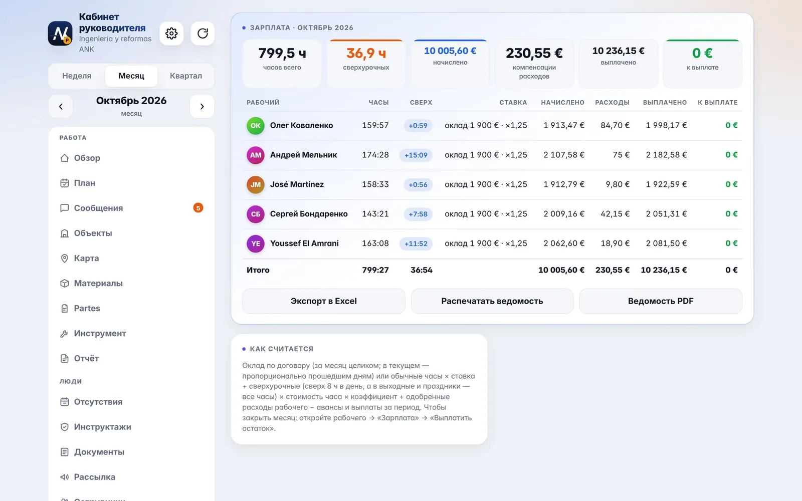
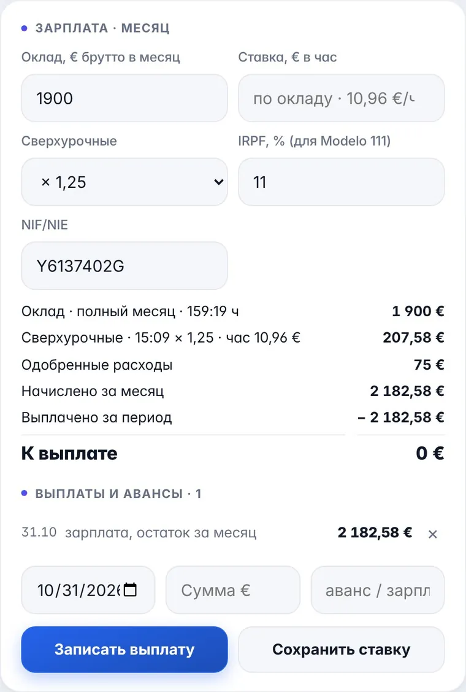
7, 20, 30.10
Youssef опоздал трижды — директор оставил заметку в карточке
15.10
Андрей опоздал на 30 минут, но предупредил из приложения
14–16.10
Сергей на больничном: это не неявка, оклад полный
13 и 19.10
Смена без фото с объекта и смена без описания работ
27.10
Youssef не нажал «Уехал» — часы не посчитаны, пока не исправит
4.11
Youssef не вышел и не предупредил — неявка
5.11
У Сергея просрочен медосмотр, у Youssef PRL истекает 22.11
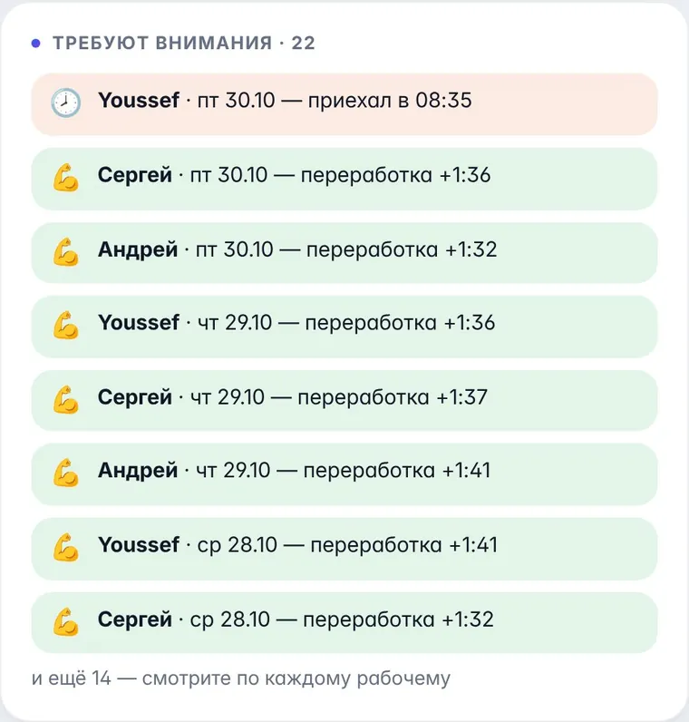
27 572 €
выставлено за октябрь без IVA, 3 счёта по часам объектов
4 798 €
просрочено с 7 октября — бот напоминает клиентке
19 444 €
смета Puerto принята, аванс 30% уже выставлен
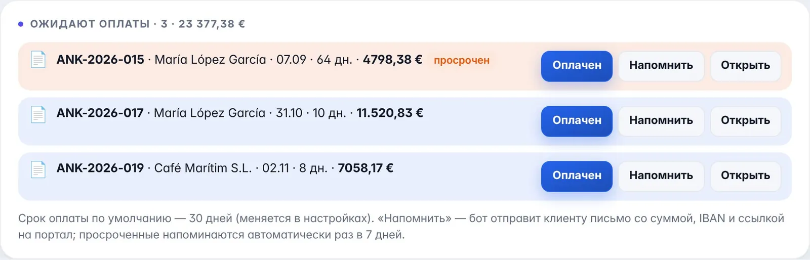
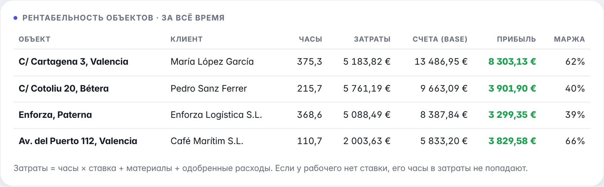
Затраты = часы бригады по стоимости часа из оклада + закупленные материалы + расходы рабочих. Сравниваем со счетами без IVA. Видно сразу: Bétera и Enforza дают около 40%, Cartagena и Puerto выше, потому что по ним уже выставлены сентябрьский счёт и аванс.
Клиентка получает одну ссылку в WhatsApp — без регистрации и пароля, на испанском.
Внутри фото с объекта, сметы, счета с IBAN и partes de trabajo.
Parte она подписывает пальцем на телефоне, подпись с датой приходит в кабинет. В демо подписаны 4 из 5 partes по Cartagena.
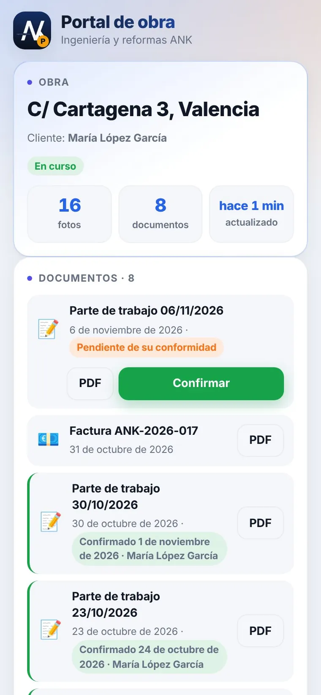
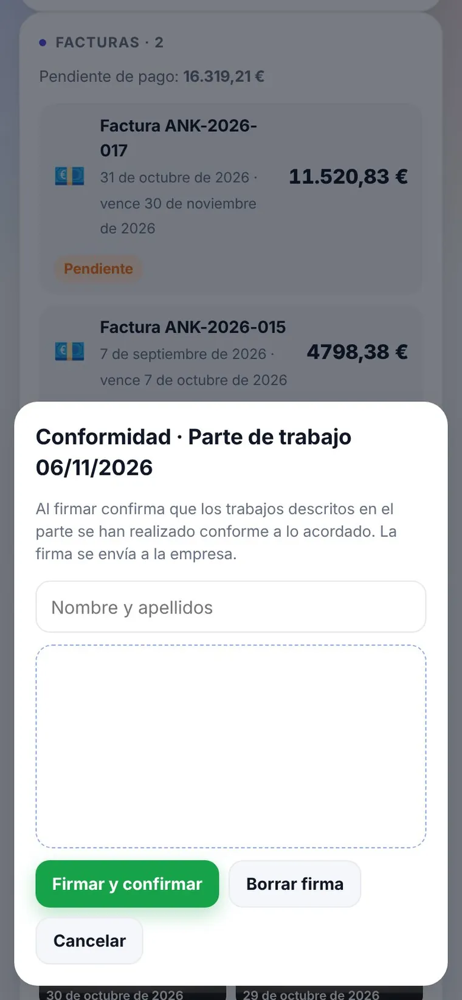
| Кто | Что видит и делает | Чего не видит |
|---|---|---|
| Директор | Всё: зарплата, счета, сметы, KPI, сотрудники и права | — |
| Бухгалтер | Зарплата и выплаты, расходы, счета и оплаты, Nóminas, Modelo 303 и 111, банк | План работ, инструмент |
| Прораб | План на день и неделю, материалы, инструмент, partes, рассылка бригаде | Зарплаты, счета, сметы |
| Рабочий | Свои смены, план от прораба, сообщения, свой инструмент | Других рабочих и деньги фирмы |
| Клиент | Свой объект: фото, partes на подпись, счета | Всё остальное |
Вход в кабинет — по email и паролю, доступ выдаёт директор. Доступ к данным ограничен правилами базы, а не только экраном.
0 € в месяц
на нашем объёме, без подписок и лицензий:
1
Запуск: кабинет, оклады по договорам, объекты. Бригада ставит приложение.
2
Работаем параллельно с нынешним учётом. Прораб ведёт план, рабочие отмечаются.
3
Сверяем ведомость кабинета с nómina от gestoría и решаем, переходить ли всем.
Все роли: директор, бухгалтер, прораб, рабочий и клиент — на тестовых данных.